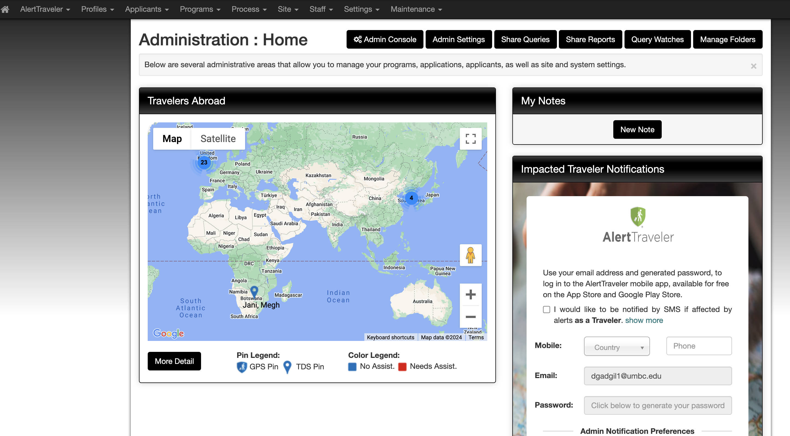
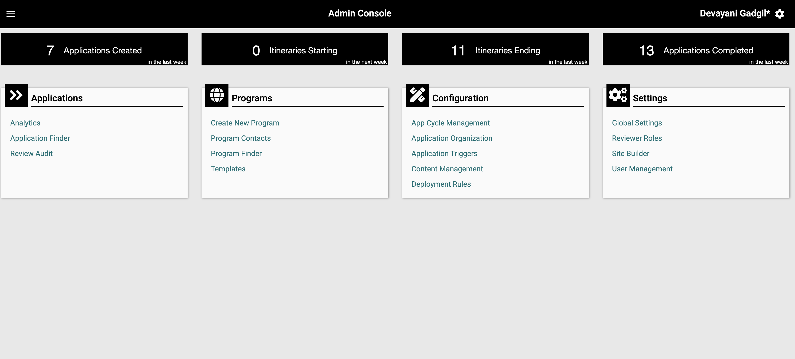
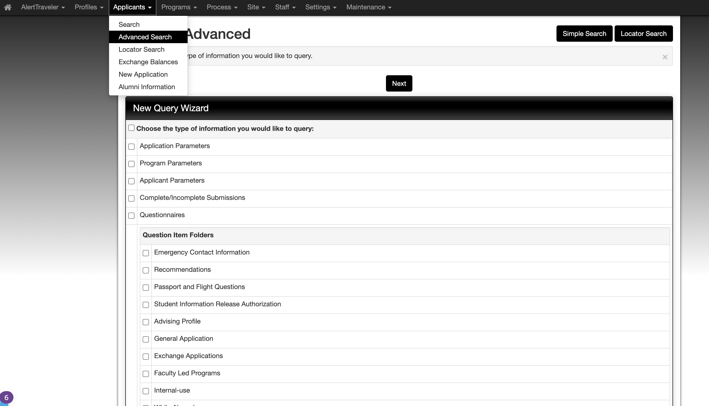
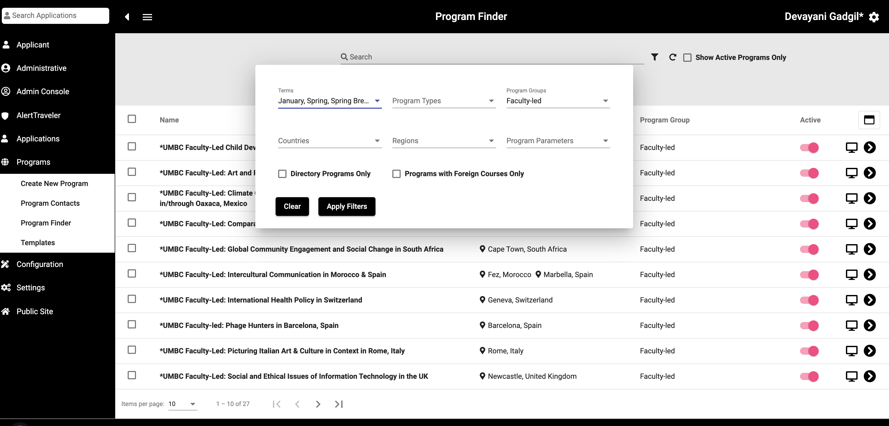
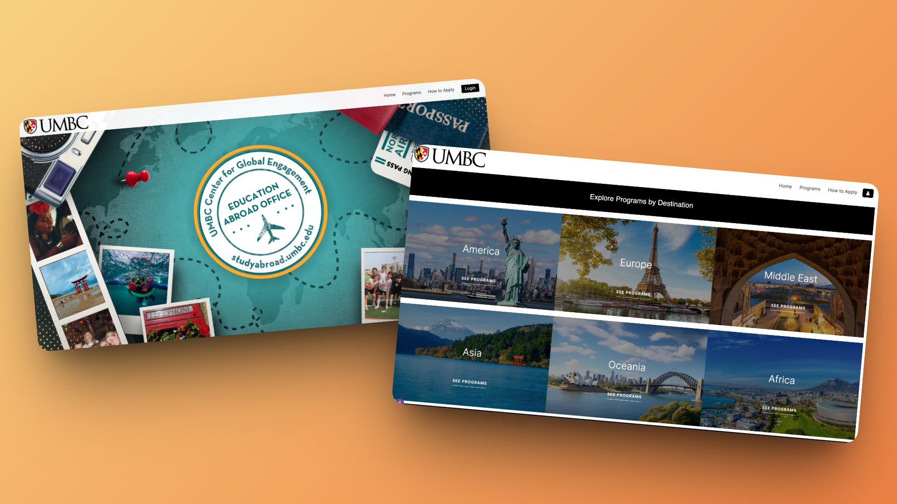

The system created friction for both students and staff
When I joined UMBC's Study Abroad Office, I noticed something everyone already felt but nobody had acted on: the process was confusing for students and exhausting for staff.
Not because the technology was missing, but because nobody had ever sat down and designed how it should actually work. The study abroad system was functional, but difficult to use.
- • Students struggled to complete applications.
- • Staff struggled to manage them.
The issue wasn't isolated—it existed across the system.
Understanding breakdowns across students and staff
I analyzed the problem from both ends before making changes.
Students Surveyed
Directly Interviewed
Validating Responses
Different users pointed to the same structural issues.
Students experienced unclear and repetitive workflows
- No clear next step
- Confusing instructions
- Repeated data entry
Staff workflows were fragmented and manual
- Switching between 3+ system views
- Outdated and irrelevant fields
- Manual exports for basic reporting
The problem wasn't the interface. It was the structure behind it.
The system had never been configured. It had just been used. Nobody had ever designed the workflow; they had only inherited it.
Platform: Terra Dotta
Everything had to happen within Terra Dotta's existing configuration options, a legacy SaaS system used by hundreds of universities.
The solution focused on structure, not UI
The FrameworkInstead of redesigning interfaces, I focused on:
- • simplifying application flows
- • restructuring content and steps
- • improving information hierarchy
Making the existing system easier to navigate and use.
Staff workflows were redesigned for efficiency:
- • reduced repetitive manual work
- • aligned system structure with real workflows
- • improved internal processes
Focused on reducing operational friction.
Student Application: Before & After
Scattered multi-form entry consolidated into a single, logical flow.
Multiple forms, duplicated fields
One logical flow, no redundancy
Staff View: Before & After
The Classic View was visually overwhelming with no actionable hierarchy. The new Admin Console surfaces what matters: immediate priorities, real-time search, and application status at a glance.




The "Zero Entry" Report
Before this project, generating a list of current applicants required manual parameter setup every single time. By correctly configuring the Applicant Report inside Terra Dotta, staff could generate this view automatically. No setup, no Excel, no waiting. This one configuration change replaced hours of weekly work.
A standalone home for Study Abroad
Before this project, all study abroad information lived on a single UMBC webpage, a dense paragraph with a few links. Students had no clear starting point. I designed and built a full standalone website using Terra Dotta's Site Builder, giving the office a proper presence that students could actually navigate.
Explore goabroad.umbc.edu ↗
Impact
Improved both student experience and staff efficiency within platform constraints.
clearer application flows
by streamlining internal work
by simplifying structure
Reflection
I learned that design is not always about creating new interfaces from scratch. Sometimes the biggest impact comes from working within constraints, improving structure, and reducing friction in existing systems.
- • working within constraints
- • improving structure
- • reducing friction in existing systems